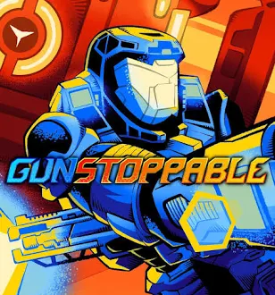

Hi there! My name is Lucas McGowan, at high school student and aspiring game developer.
This is the first game I have coded, the next step in my journey after my previous experience
with QA Testing for Cage Studio's game Gunstoppable.
I really hope you enjoy this current (essentially alpha) version of this game, but even
if you don't, this game will continue to be expanded upon and fleshed out, with the goal to
make it a 'real' indie game. I hope you will check back at some point, even if you didn't
love your first playthrough.
Thank you for your support, and please give feedback!

Some games I've personally enjoyed and been inspired by include:
- Titanfall 2 (Respawn Entertainment)
- Gunstoppable (Cage Studios)
- Jump Space (Keepsake Games)
- Hollow Knight (Team Cherry)
- Void Crew (Hutlihut Games)
- Minecraft (Mojang Studios)
- Deep Rock Galactic (Ghost Ship Games)
- Helldivers 2 (Arrowhead Game Studio)
- Warframe (Digital Extremes)